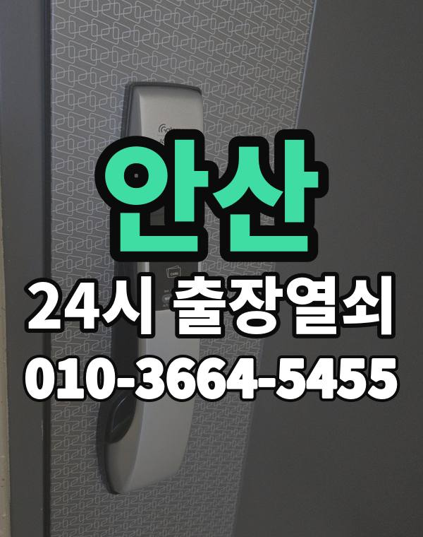

안산 출장 다니며 보는 동네
안산은 고잔, 초지동 아파트와 원곡동 다세대, 상가, 대부도 펜션까지 생활권이 다양합니다.
원곡동 쪽은 건물이 빽빽해 건물 이름이 꼭 필요합니다.

안산시 출장 가는 동네
- 고잔동
- 초지동
- 선부동
- 와동
- 원곡동
- 본오동
- 사동
- 이동
- 월피동
- 성포동
- 대부동
고잔동 출장열쇠, 초지동 열쇠집처럼 동네 이름으로 찾으셨어도 같은 곳입니다.
적혀 있지 않은 동네도 안산시 안이면 다 갑니다.
안산에서 하는 일
안산에서 전화 주실 때
상록구, 단원구 중 어디인지 먼저 알려주세요.
대부도는 거리가 있어 도착 시간을 미리 말씀드립니다.
중앙역, 고잔역, 한대앞역, 초지역 근처라고 말씀해 주셔도 위치 잡기가 쉬워집니다.
가까운 역이나 큰 건물, 단지 이름을 같이 알려주세요.
- 도로명 주소나 건물 이름
- 도어락 사진 한 장 (문자로)
- 신분증, 우편물 등 사시는 걸 확인할 것
전화부터 작업까지 순서는 이용안내에 적어 두었습니다.
안산 출장열쇠 관련 글
- 안산 본오동 장마·겨울 결로로 도어락이 이상할 때 출장열쇠 대처법
- 안산 본오동 도어락 설치 전 문 두께와 보조키 구멍 재 보기
- 안산 초지동 베란다 문이나 미닫이 중문이 잠겨 갇혔을 때, 잠금장치별로 풀어 보기
- 안산 초지동 택배 받으러 잠깐 나왔다가 문이 잠겼을 때 대처법
- 안산 대부동 대문·철문 열쇠가 안 돌아갈 때 출장열쇠 부르는 법과 점검할 것
- 안산 대부동 한밤 문 잠김, 먼 거리 출장을 부를 때 전화 요령
- 안산 고잔동 베란다 창이나 미닫이 중문이 잠겨 안 열릴 때 잠금장치 종류별로 푸는 방법
- 안산 고잔동 가사도우미나 아이 돌봄 선생님께 현관 번호를 줄 때 임시 비밀번호 활용법
- 안산 고잔동 겨울철 습기와 추위로 도어락이 먹통일 때 대처법
- 안산 이동 부모님 집 도어락 점검, 어르신이 쓰기 편한 설정과 출장열쇠 부르는 때
- 안산 이동 명절 끝나고 돌아왔는데 현관문이 안 열린다면
- 안산 사동 현관문이 안 열릴 때, 증상별로 원인을 나눠 보는 방법
- 안산 사동 스마트 도어락 고르는 법, 지문·카드·번호키 차이와 설치 전 확인
- 안산 선부동 도어락 비밀번호를 잊어버렸을 때 문 열고 새로 등록하는 순서
- 안산 선부동 출장열쇠가 문 열기 전에 신분을 확인하는 이유와 준비할 서류
- 안산 성포동 가족이 바꾼 도어락 비밀번호를 몰라 문 앞에 섰을 때
- 안산 성포동 현관문이 덜 닫힐 때 경첩·도어클로저 점검과 출장열쇠 부르는 시점
- 안산 와동 아이나 반려동물이 집 안에 있는데 문이 잠겼을 때 대처법
- 안산 와동 방문·화장실 문이 안에서 잠겼을 때 여는 방법과 멈출 때
- 안산 월피동 아이나 반려동물만 남고 문이 잠겼을 때 침착하게 움직이는 순서
- 안산 월피동 도어락 비밀번호 기억이 안 날 때 출장열쇠 부르기 전 시도할 것
- 안산 원곡동 열쇠 꾸러미를 잃어버린 날, 다세대 집 문 앞에서 할 일
- 안산 원곡동 원룸·다세대 현관문 잠김 출장열쇠 부르기 전 확인할 것
안산 출장열쇠 자주 묻는 질문
안산시 끝쪽 동네도 오시나요?
고잔동, 초지동, 선부동, 와동, 원곡동, 본오동 등 안산시 전 지역 갑니다. 적혀 있지 않은 동네도 안산시 안이면 출동합니다.
안산에서 밤늦게나 새벽에도 오시나요?
밤이든 새벽이든 받습니다. 어디인지 들으면 언제쯤 도착하는지 바로 말씀드립니다.
개방에 실패해도 비용이 나오나요?
못 열면 받지 않습니다. 얼마인지는 손대기 전에 먼저 말씀드립니다.
집주인이 아니어도 열어 주나요?
거주하시는 분인지 확인한 뒤 엽니다. 신분증이 집 안에 있으면 관리사무소 확인도 됩니다.
안산 도어락 수리나 교체도 하시나요?
네, 수리와 설치, 교체 모두 합니다. 고쳐서 쓸 수 있으면 고치는 쪽을 먼저 말씀드립니다.